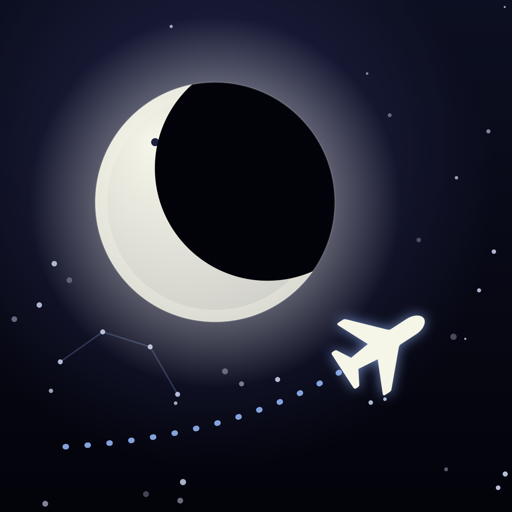
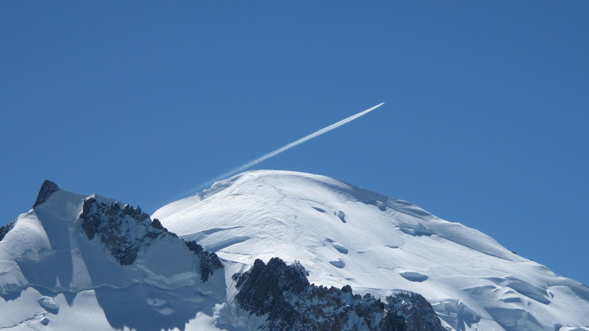
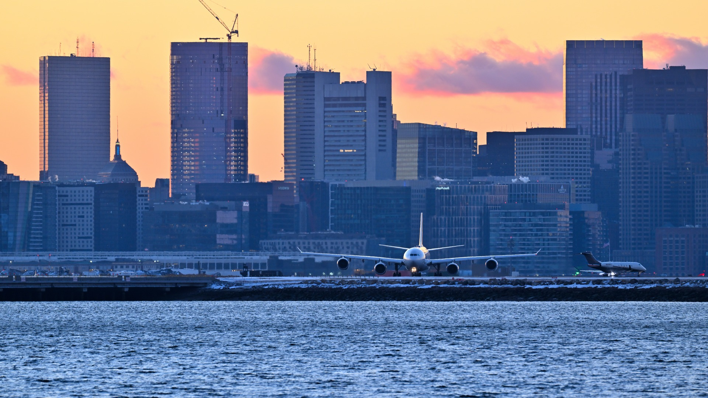
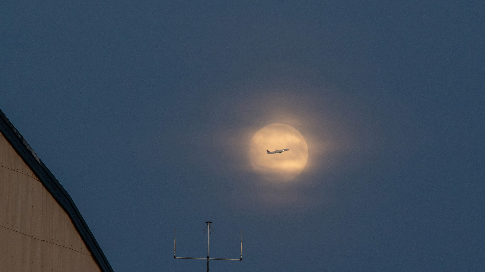
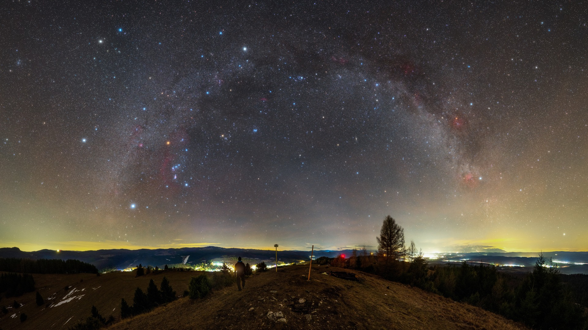
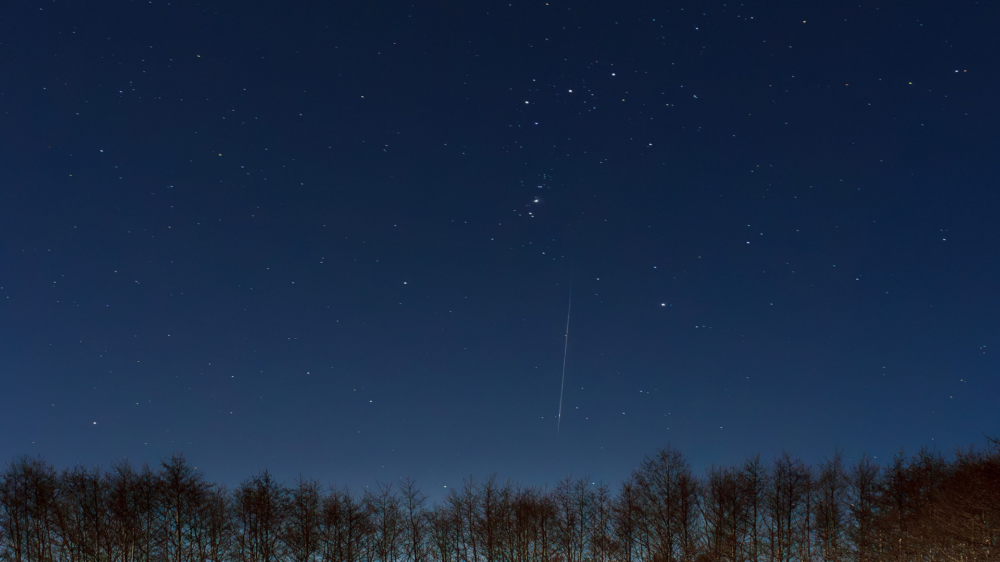
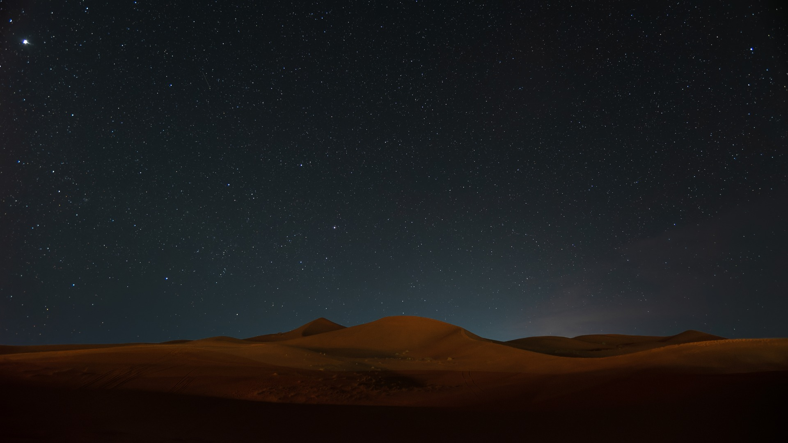
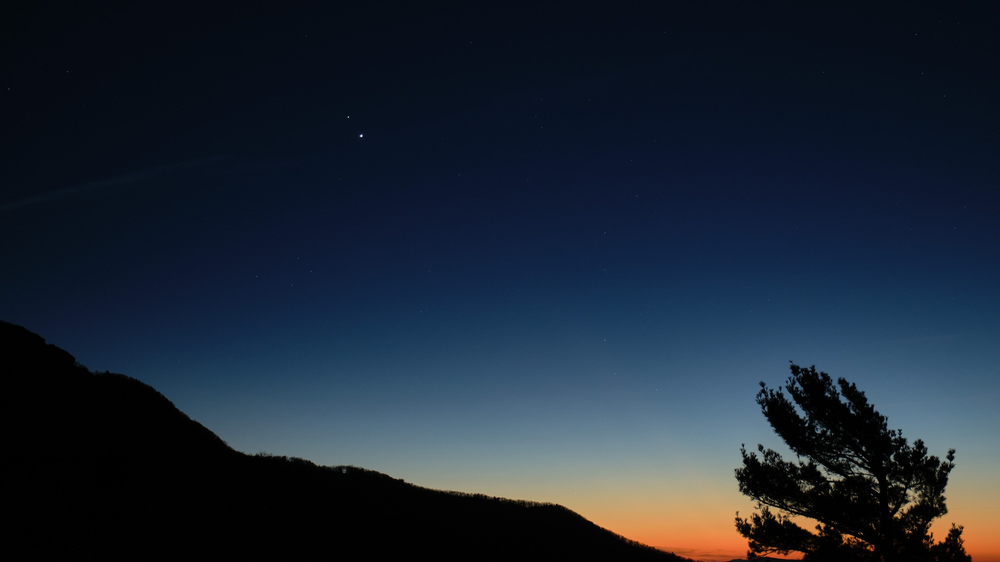

Eight in-app events run from Thanksgiving to the first week of January. Each opens the live sky in Overhead, where pointing the phone at a plane, the Moon, a planet or a star names it. Five are worldwide or hemisphere-wide; three are for one region.
Events and artwork
Event card art, 1920 × 1080. Every image is a real photograph, cropped and otherwise unedited.


United States · 24 to 30 Nov 2026 · portrait page art



All storefronts · 18 Dec 2026 to 3 Jan 2027 · portrait page art



All storefronts · 23 to 25 Dec 2026 · portrait page art



All storefronts · 31 Dec 2026 to 2 Jan 2027 · portrait page art



Northern hemisphere storefronts · 2 to 4 Jan 2027 · portrait page art



UAE, Saudi Arabia, Kuwait, Qatar, Bahrain, Oman · 10 Dec 2026 to 9 Jan 2027 · portrait page art



Mexico and Spain · 4 to 6 Jan 2027 · portrait page art


Japan · 31 Dec 2026 to 1 Jan 2027 · portrait page art

Dates behind the events
- Full Moon 24 Dec 2026 at 01:28 UTC, the closest of the year: Espenak, full Moon at perigee
- Quadrantids peak on the night of 3 to 4 Jan 2027: EarthSky, Quadrantid meteor shower
- Thanksgiving air travel record, 30 Nov 2025: TSA passenger volumes
- First-sunrise flights on 1 Jan 2027: Japan Airlines press release, 30 Oct 2026
Photo credits
- Thanksgiving's busiest sky: Mont-Blanc and airliner.jpg, Tangopaso, Public domain. Cropped.
- Flights home for the holidays: Aircraft lining up on Runway 33L at Boston Feb 2025 1.jpg, 4300streetcar, CC BY 4.0. Cropped.
- Biggest full Moon of 2026: Supermoon at Glenn Research Center (GRC-2024-C-10104).jpg, NASA Glenn Research Center / NASA/GRC/Quentin Schwinn, Public domain. Cropped.
- The first sky of 2027: Warm Winter Night Over Spiš Region (ann22042u).jpg, Robert Barsa/IAU OAE, CC BY 4.0. Cropped.
- Quadrantid meteor shower: Orion and a meteorite over the forest in Tuntorp.jpg, W.carter, CC BY 4.0. Cropped.
- Desert winter sky: Night sky in the Sahara - Morocco.jpg, Mustang Joe, CC0. Cropped.
- Cielo de la Noche de Reyes: Saturn and Jupiter Conjunction (NHQ202012130001).jpg, Bill Ingalls, Public domain. Cropped.
- 初日の出フライトを見つけよう (First sunrise of 2027): Sunrise with Mount Fuji - March 2025.jpg, Romain Guy, CC0. Cropped.


.jpg){kind=link}
.jpg){kind=link}


.jpg){kind=link}